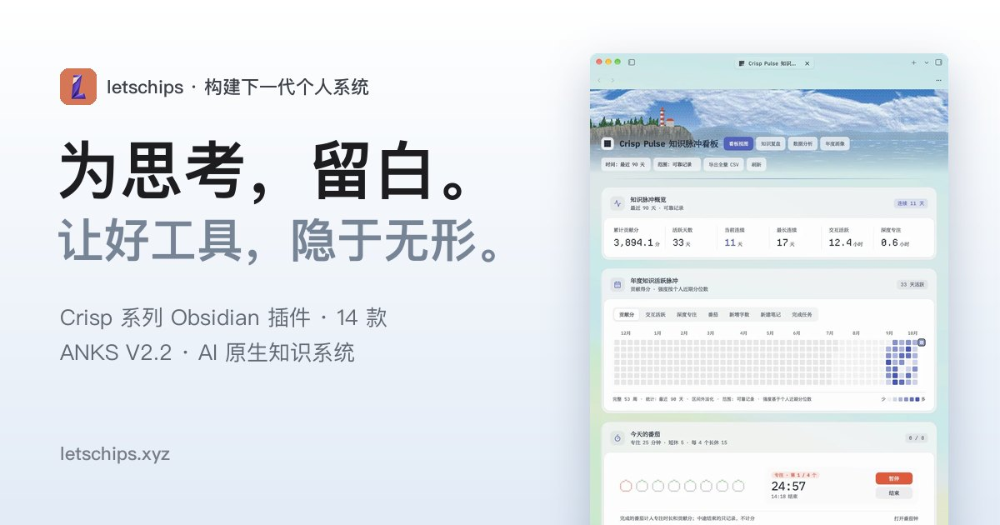

letschips ANKS V9｜Obsidian 視覺工作區與 AI 原生知識系統：功能、相容性與導入檢查

這則 Threads 在說什麼？
Threads 帳號 `@chidianerhaode` 只寫了一句：「1 万亿以内最好的 obsidian 课程，没有之一。」它是高度主觀的推薦與誇飾，沒有列出課綱、售價、評估標準或可驗證的比較基準。
貼文關聯的產品是 letschips 的 **Liquid Glass Workspace V9**：一套以 Obsidian 為基礎的視覺工作區、插件套件與知識管理工作流。比較準確的定位不是一般錄播「課程」，而是包含 starter vault、設定指南、商業插件授權與工作流素材的數位產品。
官方頁可確認的系統設計
產品將 **ANKS V2.2.0** 描述為 AI-native knowledge system：
| 面向 | 官方頁描述 | 導入時的判讀 |
|---|---|---|
| vault 結構 | `Core`、`Topics`、`Sidecar` 三層 | 先確認能否對應既有資料夾；不要直接覆蓋現有 vault。 |
| 工作階段 | `Raw`、`Source`、`Knowledge`、`Output` 四層 | 與 LLM Wiki 的來源保留、整理、產出概念相近，但命名與自動化邏輯是此產品的設計。 |
| 自動歸檔 | 宣稱 68 條 deterministic routing rules，按 metadata 移動檔案 | 屬產品方主張；先用副本與少量測試筆記驗證路由，避免誤搬筆記或附件。 |
| 新建物件 | `Cmd + Shift + N` 的 Universal New Object，預填結構與路由 metadata | 快速建檔方便，但快捷鍵、欄位與模板是否衝突需自行測試。 |
| agent 協作 | 以 `AGENTS.md` 讓 Claude Code、Codex、Antigravity 等理解規則 | `AGENTS.md` 是約定與指令，不會自動賦予 agent 正確性、外部帳號權限或資料存取權。 |
| 工作台 | Crisp Launchpad 追蹤 next actions、queues 與 vault 狀態 | 需在實際 vault 內評估是否與現有 Tasks、Dataview、Bases 等外掛重疊。 |
Crisp plugins：可確認的產品主張與版本落差
Gumroad V9 銷售頁列出 **15 個 Crisp plugins**，其中 12 個是套件授權解鎖、3 個標示為 MIT 開源；官網首頁同時寫「14 款自研插件」與「3 款免費開源」。兩個官方頁的數量表述不一致，因此不把「15」當成永久、無條件保證，而是記錄為本次擷取時的銷售頁版本。
較具代表性的模組包括：
- **Tempo**：任務與週期規劃。
- **Mind**：本地優先心智圖、Markdown 大綱與 SVG/PDF 匯出（桌面端）。
- **Recall**：挖空與抽認複習。
- **Base**：基於 Obsidian Bases 的資料視圖。
- **Pulse**：知識工作熱力圖與統計。
- **ASR**：語音轉文字與 AI 潤飾；官方頁明載使用 Volcengine API key。
- **DSH、Craft、WeChat Publisher**：銷售頁標示為免費、MIT 開源的三個插件。
這些內容是產品方描述，本文沒有購買、安裝或測試插件，也不對穩定性、隱私性、效能或跨版本可用性背書。
相容性、成本與資料邊界
- **平台**：產品稱主要在 macOS 的 Obsidian Desktop 製作與測試。Windows 可使用部分視覺設定、插件與 ANKS，但 macOS 等級的原生玻璃窗體效果不適用。
- **API 與外部服務**：ASR 涉及 Volcengine API key；這代表可能產生服務費、資料傳輸與金鑰管理責任。不要把 key 放進公開 vault、同步筆記或 Git repo。
- **商業授權**：銷售頁稱套件使用 all-in-one license key，並宣稱日後新插件可解鎖；授權範圍、裝置數、轉讓與更新條件，付款前仍應以 checkout 時顯示的條款為準。
- **退款**：銷售頁稱數位產品提供即時檔案與金鑰，因此一般不退款；購買前應先確認使用情境與相容性。
- **遷移安全**：先備份整個 vault、在副本測試 auto-router；確認檔案搬移後的 wikilinks、附件相對路徑、同步工具與 Git ignore 都正常，再導入正式資料。
- **agent 最小權限**：agent 只需要對測試 vault 有限的讀寫權限；含個資、課程名單、人事或 API key 的檔案應留在獨立私有位置。
適合誰？
較適合已經穩定使用 Obsidian、希望把視覺整理、模板、任務、回顧與 agent 協作收斂為一套工作環境的人。若只是剛試用 Obsidian、既有 vault 極度客製，或不願投入 10–30 分鐘以上的設定與驗收，先從其免費開源模組或單一需求開始會更穩妥。
與 LLM Wiki 的關係
ANKS 的 Raw／Source／Knowledge／Output 分層與 LLM Wiki 的「原始證據 → 編輯後 wiki → 產出」有共通處；兩者的共同原則是：保留原始資料、把規則明確化、讓 agent 做可追溯的協作。不同的是，ANKS 另外加入了產品化的檔案路由、視覺介面與商業插件套件。
無論使用哪種框架，漂亮的 dashboard 不等於知識已消化或流程已可靠。仍需要人工抽查來源、維護規則、檢視自動搬檔結果，並定期清理過期內容。
2026-10-22 補充：Liquid Glass V9 成果展示與英文文件線索
同一位作者的後續 [Threads](https://www.threads.com/@chidianerhaode/post/DeyiiJulala)以「朋友看了都問我用的是什麼 App」展示其 Obsidian 視覺畫面，留言所附連結仍指向 **Make Obsidian Apple-Style — Liquid Glass Workspace V9**。因此，這可視為 Liquid Glass V9 的一個使用者成果展示，而不是一般 Obsidian 的預設 UI、也不是其功能／效能已被第三方驗證的證據。
留言有人詢問 Crisp Annotation、Pomodoro 的英文介面；作者回覆會「逐步增加」plugin 的英文頁面。這是未來更新意向，不能當作現在已完整提供的英文文件或跨語言支援承諾。若考慮購入，應在付款當下重新確認銷售頁的當前版本、插件清單、介面語言、macOS／Windows 差異、授權／更新／退款條款；先用副本 vault 驗證後再匯入正式筆記。
補充來源：https://www.threads.com/@chidianerhaode/post/DeyiiJulala
來源與限制
- Threads 原貼文：https://www.threads.com/@chidianerhaode/post/DeyAxkcACF1
- letschips 官網：https://letschips.xyz/
- Gumroad 銷售頁：https://letschips.gumroad.com/l/obsidian-liquid-glass
本篇根據可公開讀取的產品頁與 Threads metadata 整理。未購買、未下載、未輸入 license key、未設定 Volcengine 或其他 API、未在本機測試檔案路由或插件；產品頁未能取得可明確驗證的當下售價，因此不列價格。